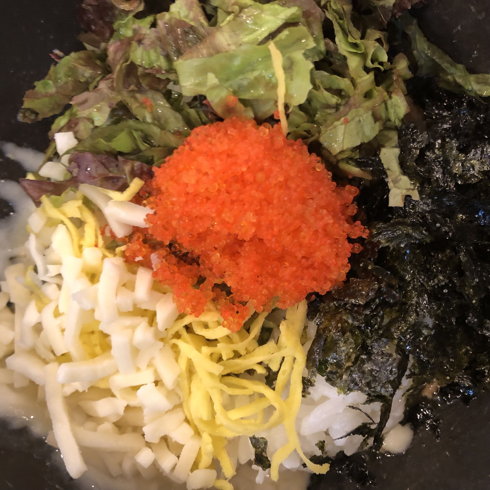

알촌

알촌은 고시촌에 위치한 알밥 전문점입니다.
매운맛에 따라 음식 조절이 가능하며 치즈나 계란과 같은 토핑 추가가 가능합니다.
최저가 메뉴가 무려 3500원으로 다른 식당들에 비해 부담 없이 식사를 즐길 수 있습니다.
반찬으로는 깍두기와 분홍 무가 있으며 따뜻한 국물도 제공해주지만 조금 맵습니다.
학생들이 가면 무료로 음료수를 제공해주거나 토핑을 추가로 얹어주십니다.
알촌의 또 다른 장점은 음식이 매우 빨리 나온다는 점입니다.
공식사이트 기준 2분이면 음식이 나옵니다.
주소 : 서울 관악구 호암로24길 55 장원
고시촌 미식회 별점:★★★★★
▲ 위 사진을 누르시면 더 다양한 메뉴를 보실 수 있으십니다.